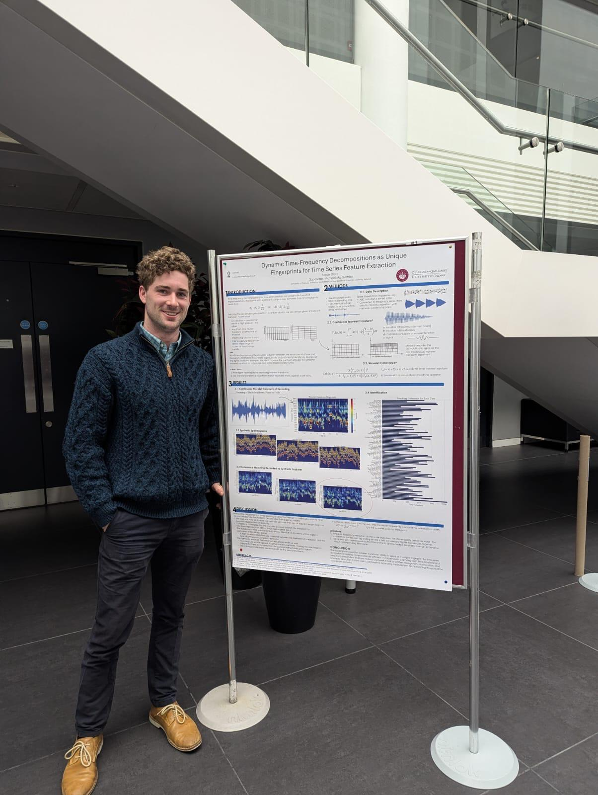

Noah is a mathematician and computational scientist focused on applying advanced signal processing and machine learning techniques to complex non-stationary signals. He grew up in Asheville, North Carolina, and began his studies at the University of North Carolina at Chapel Hill, where he competed for the track and field team and performed with the Carolina Bluegrass Band while completing a degree in mathematics with undergraduate research in computational fluid dynamics.
He has worked as a computational modeler in the wind energy sector, applying finite element methods and electromagnetic modeling, and has taught machine learning and Python, designing custom curricula with an emphasis on explainability and first-principles reasoning.
He recently completed a research master's degree at the University of Galway in Ireland, receiving awards for research presentations and publishing research on IEEE. He is a co-founder of CoherIQs, where he develops real-time coherence-based analytical tools for quantitative and econometric applications.